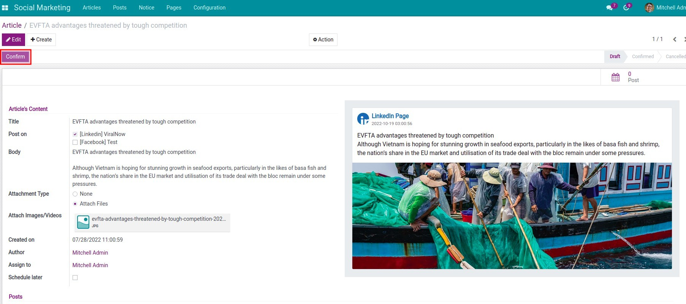
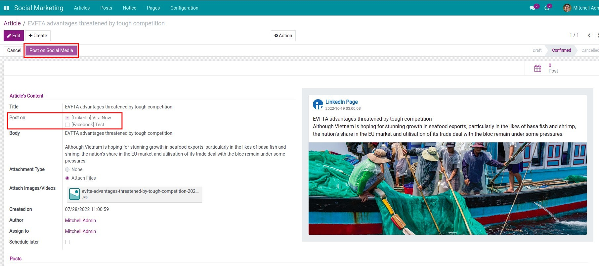
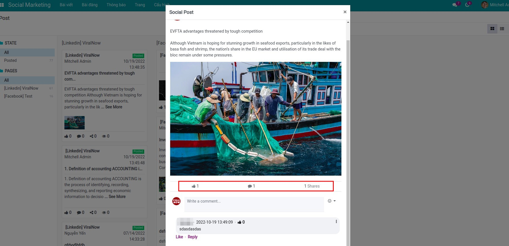

ORM and UI foundation for Viindoo social apps
Social Marketing
Technical base module: defines shared models (media, pages, articles, posts, notices), sync hooks, metrics fields, security groups, and Discuss-oriented UI shells in Odoo. Live publishing and vendor APIs are implemented in extension modules such as Facebook Social Marketing and LinkedIn Social Marketing, which depend on this package. Install the base plus the connectors you need so each network can evolve without forking the core.

Core capabilities
Stable ORM layer, backend views, cron scaffolding, and access rules that Facebook, LinkedIn, and future connector modules inherit. Platform OAuth, outbound posting, and vendor-specific quirks stay in those extensions so this base remains a single integration spine.
Flexible model stack
Social media, pages, articles, posts, and notices as first-class records you can extend per network.
Synchronization
Cron-driven sync, backfill of historical posts, and visibility into authentication token health.
Interaction metrics
Track views, likes, comments, and shares; attach images, videos, files, and links; connect with Discuss channels where configured.
Granular access
Administrator, Approver, and Editor groups separate governance from day-to-day content work.
Benefits
Base plus extensions: one technical core in Odoo, then stack only the network modules you sell or operate (Facebook, LinkedIn, others). Avoids duplicating models per channel and keeps spreadsheets or parallel marketing stacks out of the loop.
Extension modules, not forks
Ship viin_social_facebook, viin_social_linkedin, or future connectors that depend on this base instead of cloning article and post models per network.
Native Odoo fit
Mail, Discuss, web editor, and UTM foundations integrate with how teams already work in the backend.
Multi-channel ready
One operational hub for several networks once the matching Viindoo connector modules are installed.
Centralized interactions
Notices and post records give marketing and support a shared trail instead of siloed inbox exports.
Social Marketing overview
viin_social. For end-to-end posting, install the base and each connector you need. See related apps.Feature list with screenshots
Screenshots show the full stack (this base plus extensions such as Facebook or LinkedIn). The flows below rely on connector modules being installed; the base alone supplies models and UI that those modules complete.
-
1
Create posts and articles
Compose social articles and posts with rich attachments inside Odoo before they go live.
-
2
Confirm and approve
Use approval-oriented roles so content passes governance before scheduling or publishing.

-
3
Publish to social networks
Push approved items to connected Facebook or LinkedIn assets through the dedicated Viindoo extensions.

-
4
Manage posts in one place
Monitor status, engagement counters, and follow-up from consolidated kanban and list experiences.

Video and online sandboxes
Watch the overview video, then open a Viindoo demo where Social Marketing (base) and at least one connector extension are installed so publishing menus match production setups.
Pre-sales
Clarify whether you need the base only (integration project) or base plus connector modules (Facebook, LinkedIn, others). Share Odoo edition, conflict with Odoo Social Marketing, and expected posting volume.
sales@viindoo.comSupport
Include order reference, module versions (viin_social plus connectors), steps to reproduce, API or token errors, and browser console output for frontend issues.
Technical requirement
- Base dependency stack (this module): Odoo 17 with
mail,web_editor,to_base,utm. No Facebook or LinkedIn SDKs here. - OWL-backed backend assets under
web.assets_backendfor kanban, lists, and social dialogs defined in the base. - Extensions (for example
viin_social_facebook,viin_social_linkedin) add OAuth, outbound APIs, and channel rules on top of these models. - Automated tests under
viin_social/testscover base pages, articles, and access rights; connector modules carry their own integration tests.
Changes log
- v0.1.2 - Maintenance and migration updates for Odoo 17.
- v0.1.0 - Initial Social Marketing base: social media, pages, articles, posts, notices, sync hooks, metrics, and security groups.
Who should use this module?
Primary: developers and partners building or selling the Viindoo social stack. Marketing users normally install this base together with Facebook, LinkedIn, or other connector modules so day-to-day publishing works end to end.
Marketing and content teams
Use the base plus connector modules: draft, approve, and track posts with metrics after Facebook, LinkedIn, or other extensions are installed and authorized.
Developers and product owners
Main technical audience: inherit this base to ship new connector modules or customize approval flows without redefining core social records.
Odoo partners
Deliver a consistent Viindoo social stack to customers who outgrow ad hoc integrations or duplicate Odoo marketing apps.
Extension modules (depend on this base)
These apps extend Social Marketing with OAuth, APIs, and network-specific behavior. They are required for real-world publishing to Facebook and LinkedIn; install them in addition to the base module.
Facebook Social Marketing
Connect Facebook pages, publish, and pull insights into the shared social models.
View on AppsLinkedIn Social Marketing
Authorize LinkedIn company assets and align publishing with the same article and post flows.
View on Apps